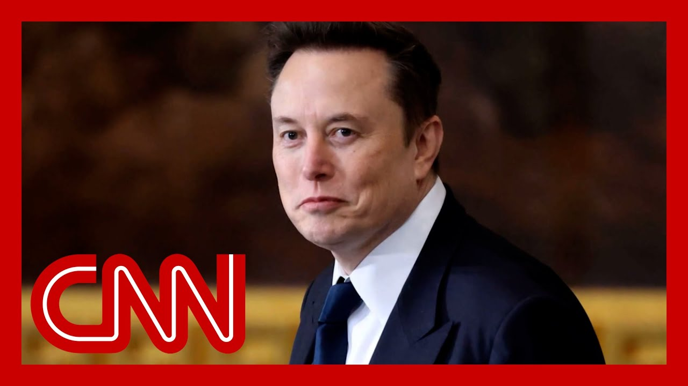

【埃隆·马斯克正式离开特朗普政府】
Summary: Elon Musk is leaving his role in the Trump administration, confirmed by a White House official, as he begins the offboarding process. Musk thanked Trump for the opportunity but criticized wasteful spending, while distancing himself from the administration. Reactions include Trump shrugging off Musk's comments and Kara Swisher analyzing Musk's frustrations with government inefficiency.
摘要： 埃隆·马斯克确认离开特朗普政府，白宫官员证实他即将启动离职程序。马斯克感谢特朗普给予的机会，但批评了浪费性支出，同时试图与政府保持距离。反应包括特朗普对马斯克的言论不以为意，以及卡拉·斯威舍分析马斯克对政府效率低下的不满。

⏱️ Estimated Reading Time: 17 min
It's now official.
现在已成定局。
Elon Musk is leaving his role as a special government employee in the Trump administration, with a white House official confirming to me tonight that he is going to start the of boarding process this evening, which essentially includes paper.
埃隆·马斯克将辞去特朗普政府特别政府雇员的职务，白宫官员今晚向我证实，他将于今晚开始离职程序，主要包括文件工作。
It's not totally clear what else but we did see Musk post this on his own website, saying as my scheduled time as a special government employee comes to an end, I'd like to thank President Trump for the opportunity to reduce wasteful spending.
虽然尚不完全清楚其他细节，但我们看到马斯克在自己的网站上发文称，随着我作为特别政府雇员的任期结束，我想感谢特朗普总统给予我减少浪费性支出的机会。
The Doge mission will only strengthen ove as it becomes a way of life through a government.
Doge使命只会通过政府成为一种生活方式而得到加强。
This is also coming, as Musk has recently tried to distance himself from the administration to a deg including when he criticized the president's big, beautiful b Something the president was asked about to and essentially shrugged off.
与此同时，马斯克最近试图在一定程度上与政府保持距离，包括他批评总统的“大而美”法案时，总统被问及此事后基本上不予理会。
What reactions?
有什么反应？
A lot of things.
很多事情。
Number one, we have to get a lot of votes.
首先，我们必须获得大量选票。
We can't be, cutting.
我们不能削减。
You know, we need we need to get a lot of support, and we have a lot of support.
你知道，我们需要获得大量支持，而我们确实有很多支持。
We will be negotiating that bill.
我们将就那项法案进行谈判。
And, I'm not happy about certain aspects of i but I'm thrilled by other aspect.
我对某些方面不满意，但对其他方面感到兴奋。
That's the way they go.
事情就是这样。
It's ver It's the big, beautiful Bill.
这就是“大而美”法案。
But the beautiful is because of the things we have.
但“美”是因为我们所拥有的东西。
Here's what Elon Musk had to say about that bill, which the Congressional Budget O has estimated would add more than $3 trillion to the federal deficit.
以下是埃隆·马斯克对该法案的评价，国会预算办公室估计该法案将使联邦赤字增加超过3万亿美元。
I was like, disappointed to see the massive spending bill, frankly, which increases the budget defic not just decrease it and undermines the work that the DOJ's team is.
坦率地说，我对这项大规模支出法案感到失望，它不仅没有减少预算赤字，反而增加了赤字，并破坏了司法部团队的工作。
I think a bill can be can be, can be big or it can be beau but I don't know if it can be bo.
我认为法案可以大，也可以美，但我不确定它能否两者兼得。
My personal opinion, my source on all of this tonight is the veteran tech journalist Kara Swisher.
我的个人观点，今晚我所有的消息来源是资深科技记者卡拉·斯威舍。
Anchor, it's great to have you h.
主播，很高兴有你在这里。
What do you make of Elon Musk officially leaving his role that he is toni.
你对埃隆·马斯克今晚正式离职有何看法？
Well, it's a long goodbye, isn't.
嗯，这是一次漫长的告别，不是吗？
I mean, he seems to be leaving and going out.
我的意思是，他似乎正在离开并退出。
He needs to work on his company.
他需要专注于自己的公司。
This was inevitable that he was not going to stay there very long.
他不可能在那里待很久，这是不可避免的。
And it was pushed along by the f that his businesses are in distr.
而他的企业陷入困境也加速了这一进程。
And and so he needs to pay atten and do his actual job.
因此，他需要集中精力，做好自己的本职工作。
Do you think he's actually leavi.
你认为他真的在离开吗？
I think he's probably frustrated by the pace of government.
我认为他可能对政府的效率感到沮丧。
And when he goes back to his com he says, jump in.
而当他回到自己的公司时，他说跳就跳。
They say how high the government they don't do that.
政府不会像他的公司那样迅速响应。
And I think he found a lot more difficulty in finding real cuts and, and everything else.
我认为他在寻找真正的削减和其他方面遇到了更多困难。
And I think they're only sending $9 billion in Doge cuts to which is nothing.
而且我认为他们只计划削减90亿美元的Doge支出，这微不足道。
It's a drop in the bucket, which means pretty much his effort was a failure.
这只是杯水车薪，意味着他的努力基本上是失败的。
Yeah, that's what they're planning to send up to the Hill based on what we know so far.
是的，根据我们目前所知，这就是他们计划提交给国会的数额。
But, I mean, $9 billion might sound like a ton o to someone who's watching, but.
但是，对于旁观者来说，90亿美元听起来可能很多。
But when you think about his stated goal of $1 trillion to cut coming in 2 trillion at first, 2 trillion initially, then that was have to be more re.
但当你想到他最初设定的削减1万亿美元的目标，后来提高到2万亿美元时，这还远远不够。
I think that puts it more in per of how much there was this high bar that they did not.
我认为这更凸显了他们未能达到的高标准。
No, it's what they spend on pape.
不，这只是他们在文件上的支出。
I mean, it's really not a lot.
我的意思是，这真的不算多。
And he didn't find it.
而他并没有找到真正的削减。
It was it was able to do it because he made cuts and in particular areas, some of which were regulating hi like foreign, you know, foreign budgets, maybe attack NP things like that.
他之所以能做到一些削减，是因为他在特定领域进行了削减，比如外国预算或类似攻击NP的事情。
But it wasn't significant cutting that they were talking a which is reforming government extensively.
但这并不是他们所谈论的大规模政府改革。
And as he correctly pointed out, you can't have a bill that's big and beautiful.
正如他正确指出的那样，法案不可能既大又美。
You can have one or the other.
你只能选择其一。
And, you know, Musk can do math, I think, and he understand the deficit, this, this $2.3 billion or more raisin the deficit is very dangerous for this country, which was something I think he genuinely wanted to h.
而且，你知道，马斯克会算数，我认为他理解赤字，这23亿美元或更多的赤字增加对这个国家非常危险，这是他真正希望解决的问题。
Did the president's response when he was asked about Elon Mus it can be big or it can be beaut it can't be both, which he said with a laugh there.
当总统被问及马斯克时，他笑着回应说，法案可以大，也可以美，但不能两者兼得。
But but I do think is a point th that he actually probably believ were you surprised that Trump di have a stronger response to that.
但我确实认为这是一个他可能真正相信的观点，你对特朗普没有更强烈的回应感到惊讶吗？
No, because he was just saying, yeah, that's the way it goes her.
不，因为他只是说，是的，事情就是这样。
And like, I think he was acknowledging that this is how it happens.
而且，我认为他承认事情就是这样发生的。
This is how the sausage is made.
这就是政治运作的方式。
And I think Elon thought because the way he runs his own companies, that he could just come in and trample everybody.
我认为埃隆以为凭借他管理公司的方式，他可以进来就碾压所有人。
And I think that was one of the I think he he bullied cabinet me.
我认为这是他欺负内阁成员的原因之一。
I think he ran over things.
我认为他横冲直撞。
He took a lot lion's share of the attention, the whole chainsaw thing, which thank God, a distant memory.
他吸引了大部分注意力，比如整个电锯事件，谢天谢地，那已成为遥远的记忆。
and I think he did he didn't.
而且我认为他确实没有。
He did a lot more showmanship than he did actual work.
他做了很多表演，而不是实际工作。
I thought what he said to the Washington Post i an interview was interesting.
我认为他在接受《华盛顿邮报》采访时说的话很有趣。
He said, Doge has just become the whipping boy for everything.
他说，Doge已经成为一切问题的替罪羊。
Something would go bad.
只要有什么事情出问题。
Something bad would happen anywh and we would get blamed for it.
无论哪里发生坏事，我们都会因此受到指责。
Even though we had nothing to do.
尽管我们与此无关。
Oh, woe is me.
哦，我真倒霉。
So that's that's what we know when you're on the big leagues, what happens.
所以这就是当你进入大联盟时会发生的事情。
You have to take blame.
你必须承担责任。
And he he attracted attention to himsel so he has no one to blame but himself in that regard.
而他吸引了这么多注意力，所以在这方面他只能怪自己。
I mean, he he wanted the attenti.
我的意思是，他想要关注。
He wanted the power.
他想要权力。
He showed up in cabinet meetings.
他出现在内阁会议上。
And then he was mad that people didn't agree with hi and then started to complain about him either.
然后他因为人们不同意他而生气，并开始抱怨他们。
On the record or off the record.
无论是公开还是私下。
So he's he's whining like that in lots of way.
所以他在很多方面都在这样抱怨。
Everyone's out to get him, wheth.
每个人都想针对他，无论是。
Sam Altman or or people who don't like Teslas or Elizabeth Warren.
萨姆·奥尔特曼，或不喜欢特斯拉的人，或伊丽莎白·沃伦。
It doesn't.
这并不。
He's always got some some victimization thing going o.
他总是觉得自己是受害者。
Did it help to that he wasn't wearing the typical hat that he's been wearing, donning in a lot of the cabinet meetings, the MAGA hat or anything about that, about Tr.
他没有戴在内阁会议上常戴的MAGA帽子或其他与特朗普相关的东西，这有帮助吗？
But instead he's wearing the Occ.
相反，他戴的是Occ帽子。
He wears that a lot.
他经常戴那顶帽子。
That's actually something he wea no, I think he'll still be aroun.
那实际上是他经常戴的，不，我认为他还会继续出现。
I think they'll still want him for the money.
我认为他们仍然会因为钱而需要他。
There's very few people can write a check that big for particular things.
很少有人能为特定事情开出那么大额的支票。
there's a lot of rich people, a lot of easier to deal with.
有很多富人，而且更容易打交道。
Rich people, I guess.
我想，富人。
But there's no one who could.
但没有人能做到。
Who really would bet that much, make that much of a bet like Elon does.
没有人能像埃隆那样下那么大的赌注。
And that's h.
这就是他的特点。
That is one attribute he has.
这是他拥有的一个特质。
His ability to take risks is higher than most people.
他承担风险的能力高于大多数人。
Yeah.
是的。
And it's not like he's totally gone from Trump's orbit.
而且他并没有完全脱离特朗普的圈子。
I mean, he was just in the Oval when the South African leader wa and it was a huge influence on how that alone.
我的意思是，南非领导人来访时他就在椭圆形办公室，这本身就产生了巨大影响。
Clearly.
显然。
Absolutely.
绝对。
I think he'll always he'll be able to call Trump.
我认为他将始终能够联系特朗普。
But I suspect they got a little they found him a bit of a nuisan.
但我怀疑他们觉得他有点烦人。
That's what I understand from people there.
这是我从那里的人那里了解到的。
You mentioned his other companie.
你提到了他的其他公司。
And today we saw a group of Tesl investors send a letter to him urging him to commit to at least a week running the company, saying his outside endeavors appeared to have diverted his ti and attention from actively managing Tesla's o.
今天我们看到一群特斯拉投资者给他发了一封信，敦促他至少花一周时间管理公司，称他的外部事务似乎分散了他积极管理特斯拉的时间和注意力。
As any other chief executive off or publicly traded company would be expected to do.
就像任何其他上市公司首席执行官应该做的那样。
Correct.
没错。
I know that's the thing is, can we have please have 40 hours of your wee.
我知道问题是，我们能否请你每周工作40小时。
Which is kind of ridiculous.
这有点荒谬。
And Tesla's really got some real challenges going forward, including finding a car that people want to buy and that the original car is ama.
而且特斯拉确实面临一些真正的挑战，包括找到人们想买的车型，而最初的车型已经过时。
But you don't rely on a single c.
但你不能依赖单一车型。
You have to you have to continue to innovate.
你必须继续创新。
And he's dropped the ball there and others have taken it u.
而他在这方面失职，其他人已经接手。
And now he's in a real jam.
现在他陷入了真正的困境。
Actu.
实际上。
He seemed to acknowledge that hi that he spent maybe too much time on politics recently saying, he did blame the media a bit, say the media is going to over represent any political stuff.
他似乎承认自己最近可能在政治上花了太多时间，并指责媒体过度报道政治内容。
He said.
他说。
It's not like I left the compani.
并不是说我离开了公司。
It was just relative time alloca.
这只是时间分配的问题。
It probably was a little too hig on the government side.
可能在政府事务上花的时间有点多。
Oh my God.
哦，天哪。
He was tweeting every five minut all about politics.
他每五分钟就发一条关于政治的推文。
Come on.
得了吧。
This is he always blames other p.
他总是责怪别人。
Look at his Twitter storm that he used to have all the tim.
看看他过去经常发的推特风暴。
Now he's you know, now he's writ tweeting about his businesses mo.
现在他更多地发关于自己业务的推文。
But he spent all his time going to look at me situation.
但他把所有时间都花在“看看我”的情况上。
Here I am in the front row of the inauguration.
我在就职典礼的前排。
Here I am jumping up and down on.
我在这里跳上跳下。
Here I am in the cabinet meeting.
我在内阁会议上。
He has no one to blame but himself on the problems at T and the fact that competition ex.
对于特斯拉的问题和竞争的存在，他只能怪自己。
And that's what's happened here.
这就是发生的事情。
Well, and on the the I think some people may hear this and say, well, he was trying to do good.
嗯，我认为有些人听到这些可能会说，他是想做好事。
He was trying to find fraud in the federal government.
他试图找出联邦政府中的欺诈行为。
But I was listening to Steve Bannon last week and he was essentially saying, you know, Republicans are trying whatever they can for Medicaid for this bill.
但我上周听了史蒂夫·班农的讲话，他基本上是说，共和党人正在为这项法案的医疗补助计划竭尽全力。
They're getting blamed by Democr.
他们正受到民主党的指责。
He's like, where is Doge?
他说，Doge在哪里？
They were supposed to go after that or go over the Pentagon budget.
他们本应追查Doge或审查五角大楼预算。
Instead, they would have for smaller projects that didn't net, you know, the huge fraud people works.
相反，他们专注于那些没有揭露大规模欺诈的小项目。
I think he's right.
我认为他是对的。
There's a lot of jazz hands, a lot of jazz hands and exhausting jazz hands.
有很多花哨的动作，令人疲惫的花哨动作。
And he sucked up all the attenti.
而他吸引了所有注意力。
And so if he was going to act like a he shield, don't be surprised that you get.
所以如果他打算表现得像一个盾牌，别惊讶你会受到攻击。
That's my feeling.
这是我的感觉。
And, you know, one of the things that he's still going to be a successful business person in one of his companies, Neurali just got a big funding.
而且，你知道，他仍然会在其中一家公司取得成功，Neuralink刚刚获得了一大笔资金。
people, you know, I don't I wouldn't bet him out in the car business, although he has a much tougher road there.
你知道，我不会赌他在汽车行业失败，尽管他在那里的道路更加艰难。
Obviously Starlink has challenge but it's doing really well.
显然，星链面临挑战，但它做得非常好。
The SpaceX stuff is really inter.
SpaceX的事情真的很有趣。
I mean, if he devotes himself to he would be great.
我的意思是，如果他专注于这些，他会做得很好。